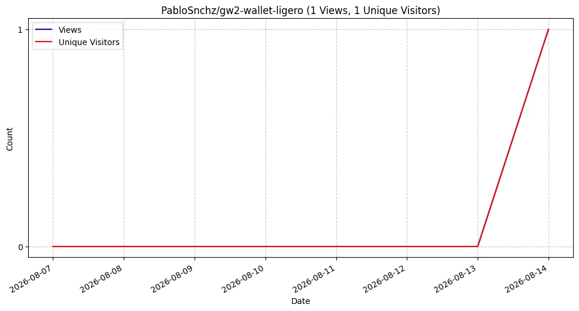
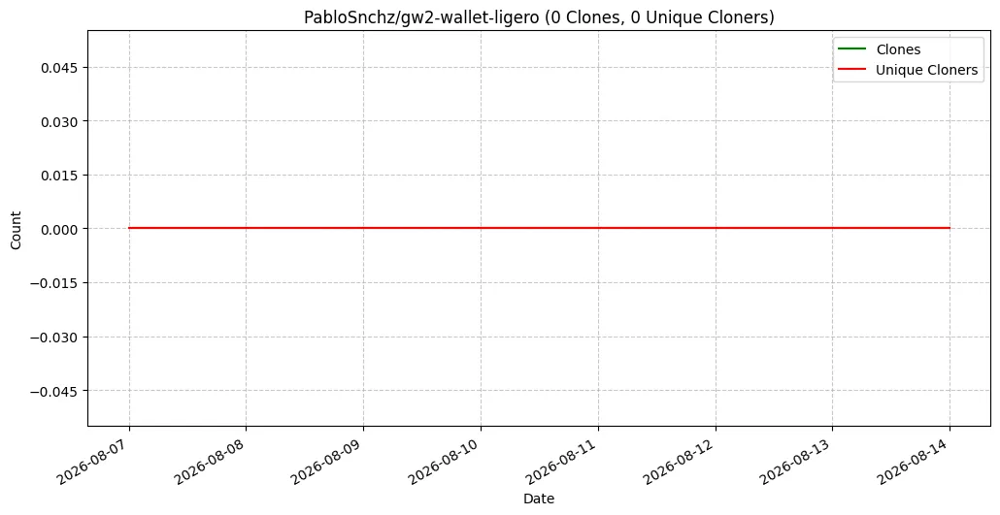

Visualización y respaldo de métricas a largo plazo para evitar la restricción de 14 días de GitHub. Datos reconstruidos desde el 19 de febrero de 2026 y combinados con Google Analytics.
⏳ Cargando estado...
La línea azul representa el total de visitas diarias a tu repositorio. La línea dorada refleja los usuarios únicos que ingresaron cada día.

La línea azul muestra el número de clones (descargas) de tu repositorio por día. La línea dorada indica cuántos desarrolladores únicos realizaron esos clones.